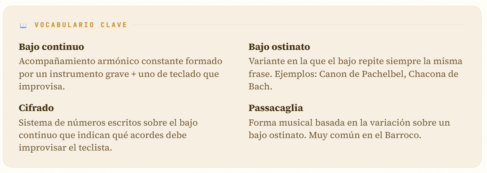
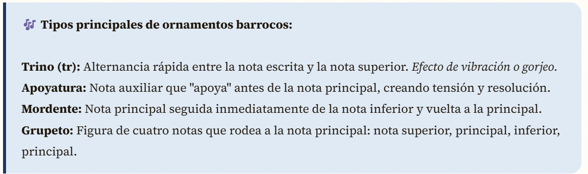
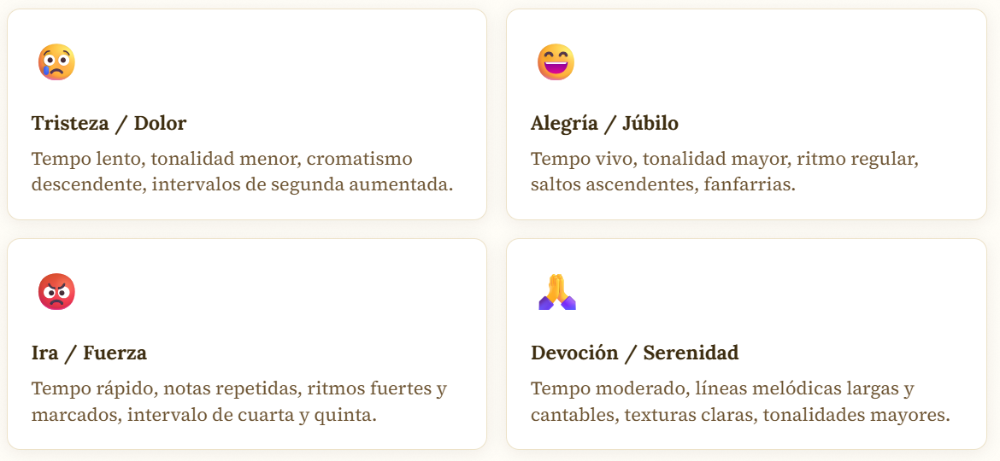
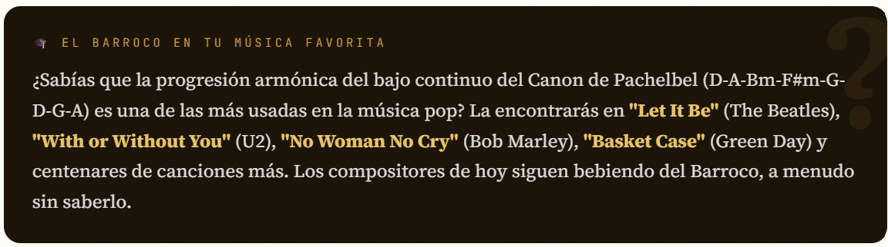
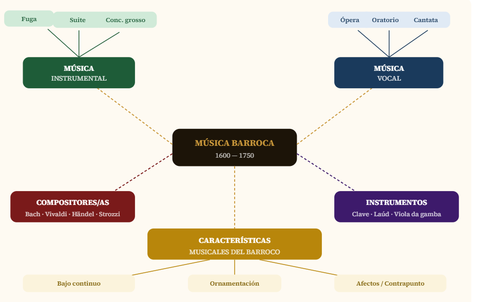
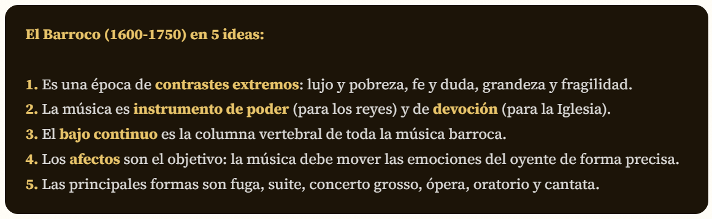
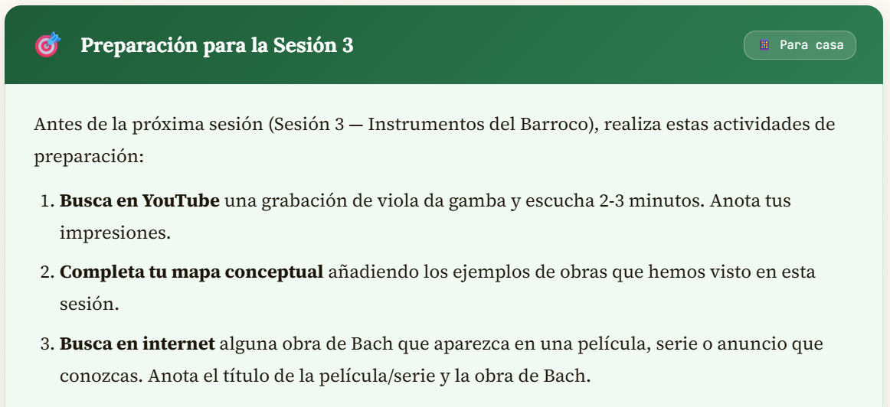

Las características musicales del Barroco
La música barroca se distingue de la música de períodos anteriores y posteriores por una serie de características técnicas y expresivas que debes conocer y reconocer al escuchar. Estas son las más importantes:
1. El bajo continuo — la columna vertebral del Barroco
El bajo continuo —también llamado basso continuo— es probablemente la característica más importante y distintiva de la música barroca. Es el equivalente musical a los cimientos de un edificio: invisible pero indispensable.
El bajo continuo consiste en dos elementos que siempre van juntos:
- Un instrumento de tesitura grave (violonchelo, viola da gamba, contrabajo, fagot) que toca una línea melódica continua en el registro bajo.
- Un instrumento de teclado (clave, órgano, laúd, tiorba) que improvisa la armonía sobre esa línea de bajo, completando el tejido sonoro.
Esta pareja inseparable de instrumentos funciona como la base armónica y rítmica de toda la obra. Cuando escuchas cualquier pieza barroca —ya sea una ópera de Monteverdi, un concierto de Vivaldi o una cantata de Bach— el bajo continuo está siempre ahí, tejiendo la armonía desde abajo.

2. La ornamentación — el arte del adorno
Si el bajo continuo es la base estructural del Barroco, la ornamentación es su superficie brillante. Los compositores y, sobre todo, los intérpretes barrocos adornaban las melodías con una enorme variedad de figuras decorativas: trinos, apoyaturas, mordentes, grupetos, portamentos...
Esta ornamentación no era un capricho: tenía una función expresiva precisa. Cada adorno añadía tensión, expresividad o elegancia a la melodía. La ornamentación era en parte escrita por el compositor y en parte improvisada por el intérprete, que demostraba así su habilidad y buen gusto.

3. La teoría de los afectos — música que habla al corazón
Los compositores barrocos estaban convencidos de que la música podía mover las pasiones del alma de forma directa y precisa. Esta idea, llamada la teoría de los afectos o doctrina de los afectos (Affektenlehre), era el principio estético central del período.
Según esta teoría, cada afecto —tristeza, alegría, ira, amor, miedo, devoción— podía expresarse mediante combinaciones específicas de tempo, tonalidad, ritmo y melodía. Por ejemplo:

4. Dinámica en terraza — sin matices graduales
Una de las diferencias más llamativas entre la música barroca y la del período romántico posterior es la dinámica en terraza. Mientras que en el Romanticismo los compositores escriben crescendos y decrescendos graduales (como el sonido de un tren que se acerca y se aleja), en el Barroco los cambios de dinámica son bruscos, como si se bajara o subiera un escalón.
Esto se debe, en parte, a las limitaciones del clave: como sus cuerdas se pulsan con la misma fuerza independientemente de cuánta presión se ejerza sobre la tecla, no puede graduar la dinámica. En cambio, sí puede añadir o quitar registros (distintas filas de cuerdas) para cambiar el volumen de forma abrupta.
5. Contrapunto y polifonía — el arte de combinar melodías
El Barroco es la época dorada del contrapunto: el arte de combinar varias líneas melódicas independientes que suenan simultáneamente. Johann Sebastian Bach llevó el contrapunto a su máxima expresión con sus fugas, en las que puede haber hasta 6 voces que se entrelazan con perfecta lógica matemática y profunda expresividad.
El Canon que aprenderemos a interpretar es el ejemplo más sencillo y hermoso de contrapunto: una sola melodía que, tocada con un desfase de tiempo por tres voces, crea una maravillosa textura polifónica.

Actividad 2.1. Audición activa- Bajo continuo y ornamentación
- Duración
- 25 minutos
- Agrupamiento
- Pequeños grupos
Vamos a escuchar dos fragmentos musicales con objetivos de análisis muy concretos. Antes de escuchar, lee lo que debes identificar. Durante la audición, presta toda la atención posible. Después, completa la ficha de escucha.
Audición A — El bajo continuo: Bach, Preludio en Do mayor (BWV 846)
Este preludio, famosísimo como introducción a uno de los estudios de violonchelo más conocidos del mundo (la Méditation de Gounod), es un ejemplo perfecto y cristalino del bajo continuo. La mano izquierda toca siempre el mismo patrón rítmico, mientras la derecha dibuja los arpegios de los acordes.
Qué observar: ¿Hay melodía clara? ¿Cómo suenan los graves? ¿Hay cambios bruscos de volumen? ¿Cuánto tiempo dura? ¿Qué sensación te produce?
Audición B — La ornamentación y los afectos: Händel— Lascia ch'io pianga (ópera Rinaldo)
Ahora escucharemos un fragmento de una ópera o cantata de Händel, donde la voz solista exhibe toda la ornamentación barroca: trinos, melismas, apoyaturas. Fíjate en cómo los adornos vocales no son gratuitos, sino que intensifican la emoción del texto.
📝 Después de ambas audiciones, completa la Ficha de Escucha Activa que encontrarás a continuación. Recuerda: no se evalúa si aciertas o no, sino la profundidad y honestidad de tu análisis.
Actividad 2.2. Mapa conceptual colectivo de las formas barrocas
- Duración
- 25 minutos
- Agrupamiento
- Gran grupo
Entre todos/as construiremos en la pizarra un mapa conceptual de las principales formas musicales barrocas. Tú copiarás el mapa en tu cuaderno y lo irás ampliando y completando a lo largo de toda la Situación de Aprendizaje, añadiendo ejemplos, fechas, compositores/as y conexiones.
Aquí tienes el esquema base del mapa. En tu cuaderno puedes hacerlo mucho más rico con imágenes, colores, conexiones y tus propias anotaciones:

Copia el mapa conceptual en tu cuaderno o en una hoja aparte de tamaño A3. Usa colores distintos para cada rama (verde para música instrumental, azul para vocal, ocre para características, rojo para compositores/as).
Empieza con la estructura básica del mapa que hemos construido en clase.
A medida que avancen las sesiones, añade ejemplos concretos (títulos de obras, nombres de compositores/as, fechas) en las ramas correspondientes.
Añade también las conexiones que vayas descubriendo entre diferentes elementos del mapa.
Al finalizar la Fase 2, deberás entregar una versión completa y ampliada de este mapa.
Resumen de la Fase 1-Lo esencial que debes saber

Preparación para la Sesión 3
